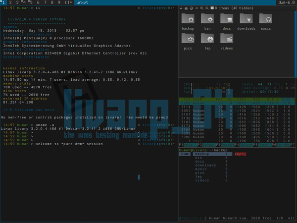

lang fr|gb

la session dwm
dwm est écrit en C … pas de rafraichissement automatique .. tu veux configurer ? alors tu dois compiler :)
dwm a su rester simple .. vierge je dirais: vierge de tout gadget et autre options qui allourdissent l'environnement et finissent par nuire aux performances de l'ordinateur et de l'utilisateur, alors que ce n'était pas l'idée de départ.
dwm est distribué par suckless.org Dedicated to software that sucks less… et adopte la philosophie KISS .
dwm est entièrement pilotable depuis le clavier mais sait aussi faire bon usage de votre souris (déplacement des clients, redimensionnement à la volée..).
cette session lance dwm dans sa version d'origine, sans menu ni patch particulier.
screenshot
{kind=link}
DWM est un tiling window manager, c'est à dire qu'il affiche vos fenêtres (clients) afin qu'elles occupent la totalité de la surface du bureau (tags). les tags occupés sont indiqués par un petit carré. les clients sont organisés de différentes façons (layouts) pour optimiser la visibilité de vos applications ouvertes.les layouts s'organisent autour du Master (zone principale) et du Stack (zone d'empilement des autres clients).
lancement
dwm est lancé directement depuis le sélecteur de sessions sans script de démarrage.
composants
la session dwm du livarp dispose de plusieurs éléments:
- DWM: le gestionaire de fenêtres lui-même, dans sa version dwm-6.1
- dwm-statusbar: affiche les tags, la disposition du tag (layout), et le titre du client actif.
raccourcis clavier/souris
dwm est entièrement pilotable depuis le clavier: control, lanceurs, navigation, manipulation des tags et clients...
les raccourcis clavier/souris sont définis dans le fichier config.h des sources lors de la compilation.
- Mod1+Shift : return ouvre le terminal par défaut
- Mod1 , : va à l'écran précédent
- Mod1 . : va à l'écran suivant
- Mod1+Shift , : deplace le client vres l'écran précédent
- Mod1+Shift . : deplace le client vres l'écran suivant
- Mod1 b : affiche/masque la barre d'info
- Mod1 t : definir le layout en “tile” (mosaïque)
- Mod1 f : definir le layout en “floating” (libre)
- Mod1 m : definir le layout en “monocle” (maximisé)
- Mod1 space : échanger entre le layout actuel et le précédent
- Mod1 j : donne le focus au client suivant
- Mod1 k : donne le focus au client précédent
- Mod1 h : agrandi la taille du master
- Mod1 l : diminue la taille du master
- Mod1 return : échange le client ayant le focus avec celui dans le master
- Mod1+Shift c : fermer le client ayant le focus
- Mod1+Shift space : libérer/“tiler” le client ayant le focus
- Mod1+Shift 0 : mettre le client qui a le focus sur tous les tags
- Mod1+Shift q : quitter dwm